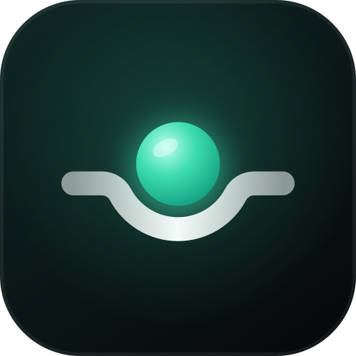

Политика конфиденциальности
Редакция 3.1 от 12 ноября 2026 г. Относится к приложению ShiftFlow для Android и веб-версии.
1. Коротко
ShiftFlow не собирает и не передаёт ваши данные. Всё, что вы вводите, хранится только на вашем устройстве. Нет аккаунтов и входа через сторонние сервисы, рекламы, аналитики, трекеров, сторонних SDK и рекомендательных алгоритмов.
2. Данные в приложении
Смены, места работы, ставки, заметки и настройки хранятся в памяти приложения на вашем устройстве. Разработчик не получает к ним доступа и не является их оператором в смысле Федерального закона № 152-ФЗ «О персональных данных».
Виджеты рабочего стола показывают часть этих данных на главном экране; нужная им копия тоже хранится только на устройстве. Учтите, что виджет видят все, кто смотрит на ваш экран.
3. Проверка обновлений
Если в приложении включена проверка обновлений, оно запрашивает с сервера обновлений небольшой файл с номером версии, чтобы предложить новую версию. Запрос не содержит данных из приложения и идентификаторов устройства. Как и при любом обращении к сайту, сервер технически получает IP-адрес и сведения о браузере; их обрабатывает хостинг-провайдер (Cloudflare) по своей политике, разработчик не использует их для идентификации. Автоматическую проверку можно выключить в настройках приложения. Версии из Google Play и RuStore обновляются через магазин и к серверу обновлений не обращаются.
4. Обращения в поддержку
Если вы напишете на shiftflow123@gmail.com, разработчик получит ваш адрес и текст письма и использует их только для ответа на обращение. Правовое основание — исполнение Пользовательского соглашения по вашему запросу (п. 5 ч. 1 ст. 6 Федерального закона № 152-ФЗ), поэтому отдельное согласие не запрашивается. Переписка не передаётся третьим лицам и по вашей просьбе удаляется.
5. Разрешения
Интернет — только для проверки обновлений. Файлы — только через системное окно выбора, когда вы сами экспортируете или импортируете данные. Доступ к контактам, местоположению, камере и микрофону не запрашивается. Облачное резервное копирование Android для приложения отключено.
6. Безопасность
Данные изолированы в хранилище приложения. Приложение не загружает внешний код и не открывает сторонние страницы внутри себя. Файлы экспорта сохраняются туда, куда укажете вы, — храните их бережно.
7. Хранение и удаление
Данные хранятся, пока вы их не удалите: «Настройки → Импорт и экспорт → Удалить все данные» или удаление приложения.
8. Дети
Знак информационной продукции — 0+: в приложении нет информации, запрещённой для детей (Федеральный закон № 436-ФЗ). Принять Пользовательское соглашение может пользователь старше 14 лет; приложение сознательно не собирает данные детей.
9. Изменения
Новая редакция политики публикуется в приложении и на сайте. При существенных изменениях приложение попросит подтвердить согласие.
10. Контакты
Вопросы о конфиденциальности: shiftflow123@gmail.com.
Version 3.1, November 12, 2026. Applies to the ShiftFlow Android app and web version.
1. In short
ShiftFlow does not collect or share your data. Everything you enter stays on your device. No accounts or third-party sign-in, ads, analytics, trackers, third-party SDKs or recommendation algorithms.
2. Data in the app
Shifts, workplaces, rates, notes and settings are stored in the app’s storage on your device. The developer has no access to them.
Home screen widgets show part of this data on your home screen; the copy they need is also stored only on the device. Anyone looking at your screen can see a widget.
3. Update checks
When update checks are enabled in the app, it requests a small file with the version number from the update server to offer a newer version. The request carries no app data and no device identifiers. Like any website request, the server technically receives your IP address and browser details, processed by the hosting provider (Cloudflare) under its policy; the developer does not use them to identify you. Automatic checks can be turned off in the app settings. Google Play and RuStore versions update through the store and never contact the update server.
4. Support
If you write to shiftflow123@gmail.com, the developer receives your address and message and uses them only to reply. The legal basis is performing the Terms at your request, so no separate consent is asked. The conversation is not shared and is deleted on request.
5. Permissions
Internet — only for update checks. Files — only through the system picker when you export or import. No access to contacts, location, camera or microphone. Android cloud backup is disabled for the app.
6. Security
Data is isolated in the app’s storage. The app does not load external code or open third-party pages inside itself. Exported files are saved where you choose — keep them safe.
7. Retention and deletion
Data is kept until you delete it: Settings → Import and export → Delete all data, or uninstall the app.
8. Children
Content rating: 0+ (no content restricted for children). The Terms can be accepted by users over 14; the app does not knowingly collect children’s data.
9. Changes
A new version of this policy is published in the app and on the website. After material changes the app asks you to confirm again.
10. Contact
Privacy questions: shiftflow123@gmail.com.